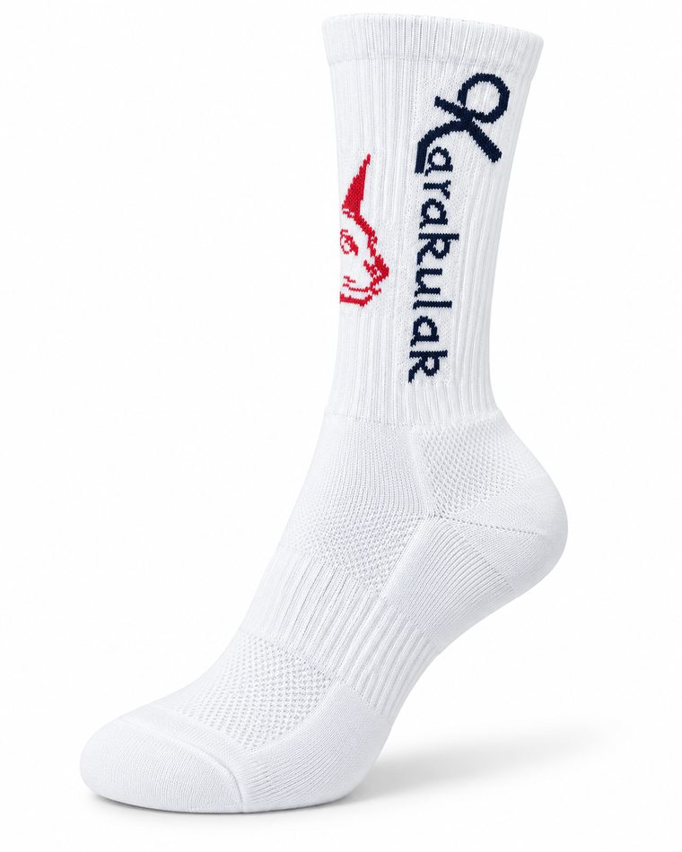
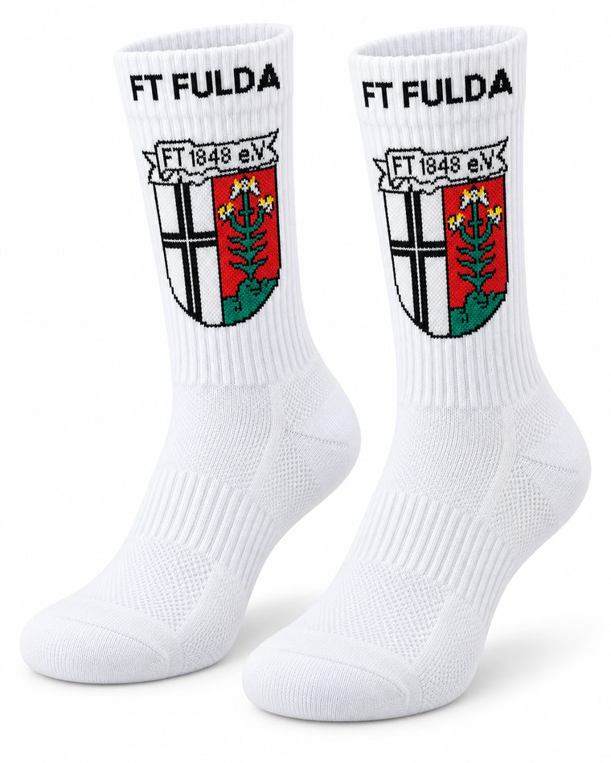

Socks manufacturer and exporter · Lahore, Pakistan
Knit your next move.
Your vision, our craft, for brands, teams and everyday life.
Explore the collection
Four ways to start. Every style can be developed around your design.

Design samples illustrate our work. Logos belong to their respective owners; no affiliation is implied.
From yarn to your next collection
Meet the craft behind the pair.
We knit on machines with 108, 132, 144, 168 and 200 needles. Tell us the look and feel you want, and we will discuss the right fit for your design.
108 · 132 · 144 · 168 · 200 needles
108
needles
132
needles
144
needles
168
needles
200
needles
Made to be worn, made to be noticed

A closer look
Make your mark
Explore knitted graphics and branding inspired by your design.
Find your silhouette
From understated low cuts to statement crew and football styles.
Consider every detail
Discuss yarn, sizing, cushioning and packaging for your project.
Care in the craft. Confidence in the process.
OEKO-TEX® certified. ISO certified.


Three steps from idea to order
The same process for a single style or a full collection.
Share the idea
Send your artwork, reference images, intended use and estimated quantity.
Work through the details
Discuss construction, colours, sizes and sample requirements with our team.
Bring it together
Confirm the specification, quotation and production timeline for your order.
Questions we are often asked
Can you develop socks with our logo?
Share your artwork or reference sample. We'll discuss knitted branding, colours and design feasibility for your project.
What information should I send for a quotation?
Include the sock style, estimated quantity, size range, reference images, material preferences and delivery destination. Let us know if you need packaging.
What is the minimum order quantity?
Contact our team with your design and estimated quantity so we can discuss the applicable order requirements.
Can I review a sample before bulk production?
Yes. Our development process includes a sample for approval before bulk production. Discuss sampling arrangements with our team.
How long will my order take?
Sampling and production timelines are discussed for each project, based on the specification, quantity and agreed approvals.
Let's talk
Share your artwork, intended use and estimated quantity. We will take it from there.